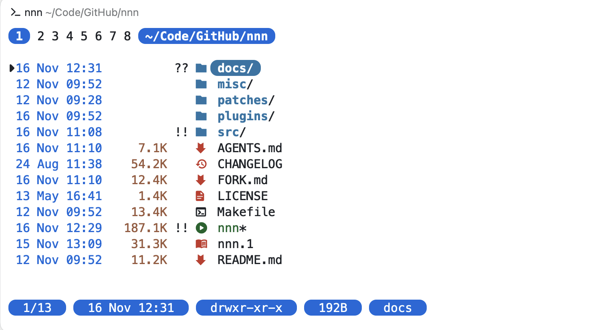
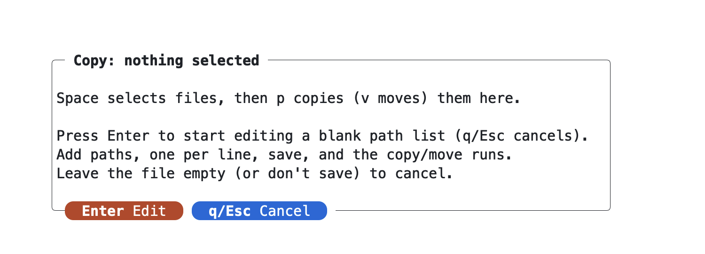

nnn, with a finer finish.
nnn is the fastest terminal file manager. This fork keeps everything upstream does and adds a polished interface: rounded pills, floating popups, git status, native image previews and zoxide jumping.

What's new
Every change is a small, optional layer on top of upstream nnn. Switch any of it off with a flag or an environment variable.
Rounded pills
The hover highlight, status-line segments, the context number, the whole top-line path and every message are drawn as rounded pills with Powerline caps.
Messages get their own orange so they stand out from the status bar. Turn it off with NNN_PILL=0.
Choice prompts
Prompts with options show one pill per choice. The default is filled, the key to press is capitalised and underlined, and a final Esc pill shows that any other key cancels.
Floating windows
Help, file stats and confirmations open in rounded, titled popups that fit their content, with pill key hints along the bottom.
Safer deletes
Deleting one file ends the prompt with [y/n]. With a selection, the files are listed in a popup, relative to where you are, before you confirm with y.
Set NNN_TRASH=trash and x sends files to the macOS Trash while X stays permanent (rm -rf, no Trash).

Copy and move, nothing selected
Pressing p or v with nothing selected explains what happens first. Enter opens the editor on a blank path list, q or Esc cancels without opening it.

Git status
A status column built into nnn, not a patch. -G turns it on, i toggles it live, and it only appears when the repo has changes. In $HOME it reads your bare ~/.dotfiles repo.
Readable timestamps
Compact eza style (-y), US style (-Y) or eza with the weekday for today's files (-Z). Press y to cycle them in a running session.
Recently changed files get a clock icon, and a triangle marks the hovered entry.
Quieter detail view
Hide directory sizes with -I and octal permissions with -m, or toggle them with I and M. Time and size columns have their own colors in NNN_FCOLORS.
Native previews
The preview-tui plugin opens a real Ghostty or Rex split instead of wrapping nnn in tmux, and closes it again by id so other panes are never touched.
Images render with chafa or viu, with an EXIF caption underneath. Camera RAW files show their embedded JPEG, and video plays through mpv.
zoxide jumping
Directories you visit in nnn can be recorded with zoxide add, which the shell hook never sees. ;z jumps: an empty prompt opens the picker, anything else is the query.
Everyday conveniences
Quick Look the hovered file with ;; or Ctrl+Space. Copy names or full paths to the clipboard with C and Ctrl+B.
Sort keys now set rather than toggle, with tT for oldest first and tc to reset.
New keys
Bindings this fork adds. Everything else works as upstream.
| Key | Action |
|---|---|
| i | Toggle the git status column |
| M | Toggle octal permissions in detail mode |
| I | Toggle directory sizes in detail mode |
| y | Cycle the timestamp format: ISO, eza, US, eza with today |
| C / Ctrl+B | Copy file names / full paths of the selection (else the hovered entry) to the clipboard |
| ;; / Ctrl+Space | macOS Quick Look of the hovered file |
| t then T | Sort by time, oldest first |
| t then c | Clear every sort key |
| ; then z | Jump to a zoxide match (bound in your launcher) |
Options
Flags and environment variables. Add the letters to NNN_OPTS to make them permanent.
| Setting | Effect |
|---|---|
-G | Query git and show the status column |
-y -Y -Z | Compact eza, US, or eza-with-weekday timestamps (the last one wins) |
-I -m | Hide directory sizes, hide octal permissions |
NNN_PILL=0 | Turn off the rounded caps |
NNN_MSGCOLOR | Message pill color, 0 to 255 |
NNN_YOUNG | Style for recent files: icon, reverse, pill or none |
NNN_HOVERMARK | Hovered entry marker: triangle, 1 for >, 0 for none |
NNN_IMGVIEWER | Image previews with chafa (default) or viu |
NNN_PREVIEWEXIF=0 | Hide the EXIF caption under image previews |
NNN_ZOXIDE=1 | Record visited directories with zoxide (off by default) |
NNN_TRASH | Command used by x to trash instead of delete, for example trash |
Install
Build from source. The pills need a Nerd Font in your terminal; without O_NERD the interface falls back to plain characters.
# get the fork git clone -b amazebb https://github.com/amazebb/nnn.git cd nnn # build with Nerd Font support and install to ~/.local make deploy # install the plugins, including the previews rsync -a plugins/ ~/.config/nnn/plugins/
nnn -V should report 5.3-amazebb. The binary goes to ~/.local/bin/nnn with the previous copy kept as nnn.bak, so make sure that folder is on your PATH. Previews also need Ghostty 1.3+ or Rex, and chafa or viu.
Manual
The full nnn(1) man page, from nnn.1. Open a section, or to search it with the browser.
Name
nnn — The
unorthodox terminal file manager.
Synopsis
nnn |
[-aAcCdDeEfgGHIJKmnQrRSuUVxyYzZ0h] [-b key] [-F val] [-l val] [-p file] [-P key] [-s name] [-t secs] [-T key] [PATH] |
Description
nnn (Nnn's Not Noice) is a
performance-optimized, feature-packed fork of noice
http://git.2f30.org/noice/
with seamless desktop integration, simplified navigation,
type-to-nav
mode with dir auto-enter, disk usage analyzer mode, bookmarks, contexts,
application launcher, familiar navigation shortcuts, subshell spawning and
much more. It remains a simple and efficient file manager that stays out of
your way.
nnn opens the current working directory if
PATH is not specified. If PATH
is specified and it exists, nnn will open it. If the
PATH doesn't exist and ends with a /,
nnn will attempt to create the directory tree and
open it. Otherwise, PATH is considered a path to a
regular file and nnn attempts to create the complete
directory tree to the file, open the parent directory and prompt to create
the new file in it with the base filename.
Keybinds
Press ‘?’ in
nnn for a one-line summary of the keybinds. This
section describes them in full. Keys shown as ^X are Ctrl+X. Keys
separated by commas are aliases.
Navigation
Key | Function
_____________________ + ___________________________________________________
j, Down | Next entry
k, Up | Previous entry
h, Left | Go to the parent directory
l, Right | Open the hovered dir or file
Enter | Same as l; in picker mode, picks the hovered file
PgDn, ^D | Page down (^D: half page)
PgUp, ^U | Page up (^U: half page)
g, ^A, Home | First entry
G, ^E, End | Last entry
' | Prompt for a key; jump to the next entry starting
| with it, or press ' again for the first non-dir file
J | Prompt for an entry number n to jump to; +n or -n
| moves relative to the current entry
^Y | Jump to the next recently modified ("young") entry
~ | Go to HOME
` | Go to /
@ | Go to the directory nnn was started in
- | Go to the last visited directory
^J | Toggle auto-advance to the next entry after opening
. | Toggle hidden files
_____________________ + ___________________________________________________
Contexts, bookmarks, quit
Key | Function
_____________________ + ___________________________________________________
1-8 | Go to context n, creating it if needed
Tab, Shift+Tab | Cycle contexts forward, backward
q, Alt+Esc | Quit the current context (quits at the last one)
R | Reopen the last closed context
B | Bookmark the current directory (prompts for a name)
b, ^/ | Prompt for a bookmark key and go to it; , goes to
| the marked directory, Enter to the bookmarks dir
, | Mark the current directory
Esc, ^Q | Quit
^G | Quit and change directory (with the n3 launcher)
Q | Quit with an error code (picker/cd-on-quit scripts)
_____________________ + ___________________________________________________
Filter and display
Key | Function
_____________________ + ___________________________________________________
/ | Filter entries in the current directory
^N | Toggle type-to-nav mode
d | Toggle detail mode (permissions, time, size)
i | Toggle the git status column
M | Toggle octal permissions in detail mode
y | Cycle the detail time format: ISO, eza, US, eza with
| weekday for files modified today
I | Toggle directory sizes in detail mode
T | Set the time type: access, change, modified
t, ^T | Sort toggles (see SORTING)
P | Toggle the preview plugin
^L | Redraw the screen
;;, Ctrl+Space | macOS Quick Look of the hovered file
_____________________ + ___________________________________________________
Selection and file operations
Key | Function
_____________________ + ___________________________________________________
Space, + | Toggle selection of the hovered entry
m, mm | Start a range selection; press m again (or move
| and press m) to end it; mm clears the selection
a | Select all entries in the current directory
A | Invert the selection in the current directory
E | Edit the selection list in the editor
S | Show the total size of the selection listed here
C | Copy file name(s) of the selection, else the hovered
| entry, to the system clipboard
^B | Same as C, with full paths
p, ^P | Copy the selection into the current directory
v, ^V | Move the selection into the current directory
w, ^W | Copy or move the selection, prompting for new names
x, ^X | Delete the selection (or hovered entry) to trash
X | Delete with rm -rf
n | Create a file, directory, symlink or hard link
^R | Rename the hovered entry (or duplicate if the name
| is unchanged)
r | Batch rename the entries of the current directory
z | Archive the selection or hovered entry
e | Edit the hovered file in $EDITOR
o, ^O | Open the hovered entry with a command you type
f, ^F | Show file details (stat, file, mime type)
* | Toggle the executable bit
> | Export the file list of the directory to a file
_____________________ + ___________________________________________________
C and ^B put one name or path per line on the clipboard. In any text prompt, such as the one opened by n, ^g (lowercase) inserts the first copied entry at the cursor. If several entries were copied, only the first is inserted. ^Y does the same where the terminal passes it through, but macOS reserves it, so use ^g.
Prompt editing
These keys work in every text prompt (new, rename, open with, ...):
Key | Function
_____________________ + ___________________________________________________
Enter | Accept
Esc | Cancel
^A, ^E | Start, end of line
^F, ^B | Forward, back one character
^W, ^U, ^K, ^L | Delete word before cursor, before cursor, after
| cursor, whole line
^D | Delete character (cancels on an empty prompt)
Tab | Insert hovered file names, cycling on repeat
^g | Paste the first entry copied with C or ^B
_____________________ + ___________________________________________________
Other
Key | Function _____________________ + ___________________________________________________ ; | Run a plugin by its key; ;; is Quick Look Alt+; | Select a plugin from a menu = | Launch a GUI application ! , ^] | Spawn a shell in the current directory ] | Command prompt c | Connect to a remote host over SSHFS u | Unmount a remote host or archive s | Manage sessions 0 | Lock the terminal ? | Show help and configuration _____________________ + ___________________________________________________
On macOS, ;; (the plugin key twice) or Ctrl+Space opens the hovered file in Quick Look (qlmanage -p) and brings its window to the front. The first use may ask for Automation permission to control System Events.
Options
nnn supports the following options:
-a
auto-setup temporary NNN_FIFO (refer to the ENVIRONMENT
section)
-A
disable directory auto-enter on unique filter match
-b key
specify bookmark key to open
-B
use bsdtar for archives (default: atool)
-c
indicates that NNN_OPENER is a cli-only opener (overrides -e)
openers invoking GUI applications should suppress their stdout/stderr
-C
8-color scheme - color directories by context, disable file colors
-d
detail mode
-D
show directories in context color with NNN_FCOLORS set
-e
open text files in $VISUAL (else $EDITOR, fallback vi) [preferably CLI]
-E
use $EDITOR for internal undetached edits
-f
use history file
-F val
fifo notification mode
0: notify as previewer, 1: notify as explorer
-g
use regex filters instead of substring match
-G
query git and show the status column (detail and normal mode).
Without -G, git is not run. Toggle with i.
-H
show hidden files
-i
show current file information in info bar (may be slow)
-I
hide directory sizes in detail mode (files still show size;
disk-usage sort still shows directory totals). Toggle with I.
-J
disable auto-advance on selection
(eg. selecting an entry will no longer move cursor to the next entry)
-K
test for keybind collision and exit
-l val
number of lines to move per mouse wheel scroll
-m
hide octal permissions in detail mode (status bar still shows
ls-style perms). Toggle with M.
-n
start in type-to-nav mode
-o
open files only on Enter key
-p file
copy (or pick) selection to file, or stdout if file='-'
-P key
specify plugin key to run
-Q
disable confirmation on quit with multiple contexts active
-r
show cp, mv progress
(Linux-only, needs advcpmv; ^T shows the progress on
BSD/macOS)
-R
disable rollover at edges (eg. pressing down while on the last
entry will no longer move cursor to the first entry and vice-versa)
-s name
load a session by name
-S
persistent session
-t secs
idle timeout in seconds to lock terminal
-T key
sort order (refer to the SORTING section)
keys: 'a'pparent disk usage / 'd'isk usage / 'e'xtension / 'r'everse / 's'ize
/ 't'ime / 'v'ersion
capitalize to reverse (except 'r')
-u
use selection if available, don't prompt to choose between selection and
hovered entry
-U
show user and group names in status bar
-V
show version and exit
-x
show notifications on selection cp, mv, rm completion (requires the
.ntfy plugin)
copy path to system clipboard on selection (requires the .cbcp plugin)
show xterm title (if non-picker mode)
-y
compact timestamps in the eza default style (fixed 12 columns):
this year as DD MMM HH:MM, earlier years as DD MMM YYYY.
y cycles ISO, eza, US and eza + today formats.
-Y
compact timestamps in US style (fixed 12 columns):
this year as MMM DD HH:MM, earlier years as MMM DD YYYY
-Z
eza style (see -y), but entries modified today show
the weekday and time, e.g. Thu 14:32, without the reverse-video
highlight used for
entries changed in the last 5 minutes (fixed 12 columns)
-z
use fuzzy filters (fuzzy match: all characters in filter appear in order)
-0
use null separator (instead of newline) to separate file paths in picker mode
outout
-h
show program help and exit
Configuration
There is no configuration file. Associated files are at
${XDG_CONFIG_HOME:-$HOME/.config}/nnn/
Configuration is done using a few optional (set if you need) environment variables. Refer to the ENVIRONMENT section.
nnn uses xdg-open (on Linux),
open(1) (on macOS), cygstart on (Cygwin) and open on
(Haiku) as the desktop opener. It's also possible to specify a custom
opener. Refer to the ENVIRONMENT section.
Contexts
Open multiple locations with 8 contexts. The status is shown in the top left corner:
- the current context is in reverse video
- other active contexts are underlined
- rest are inactive
A new context copies the state of the previous context. Each context can have its own color. Refer to the ENVIRONMENT section.
Sessions
Sessions are a way to save and restore states of work. A session stores the settings and contexts. Sessions can be loaded at runtime or with a program option.
- When a session is loaded at runtime, the last working state is
saved automatically to a dedicated "auto session" session file.
Session option restore would restore the "auto session".
- The persistent session option is global. If it is used, the last active
session will be updated with the final state at program quit.
- The "auto session" is used in persistent session mode if no
session is active.
- Listing input stream and opening a bookmark by key have a higher priority to
session options (-s/-S).
All the session files are located by session name in the directory
${XDG_CONFIG_HOME:-$HOME/.config}/nnn/sessions
"@" is the "auto session" file.
Filters
Filters are strings (or regex patterns) to find matching entries
in the current directory instantly (search-as-you-type). Matches are
case-insensitive by default. The last filter in each context is persisted at
runtime or in saved sessions.
When there's a unique match and it's a directory, nnn
auto enters the directory. Use the relevant program option to disable
this.
Special keys at filter prompt:
-------- + --------------------------------------- Key | Function -------- + --------------------------------------- ^char | Usual keybind functionality Esc | Exit filter prompt but skip dir refresh / | Enter dir exactly matching filter -------- + ---------------------------------------
Special keys at empty filter prompt:
------ + -------------------------------------
Key | Function
------ + -------------------------------------
? | Show help and config screen
/ | Toggle between string, fuzzy, regex
: | Toggle case-sensitivity
^L | Clear filter (if prompt is non-empty)
| OR apply last filter
Bksp | Stay at filter prompt and refresh dir
Del | Stay at filter prompt and refresh dir
------ + -------------------------------------
Common regex use cases:
(1) To list all matches starting with the filter expression,
start the expression with a '^' (caret) symbol.
(2) Type '\.mkv' to list all MKV files.
(3) Use '.*' to match any character (sort of fuzzy search).
(4) Exclude filenames having 'nnn' (compiled with PCRE2 lib): '^(?!nnn)'
In the type-to-nav mode directories are opened in filter mode, allowing continuous navigation.
Additional special keys at empty filter prompt in type-to-nav mode:
------ + ------------------------ Key | Function ------ + ------------------------ ' | Go to first non-dir file + | Toggle file selection , | Mark CWD - | Go to last visited dir . | Show hidden files ; | Run a plugin by its key = | Launch a GUI application > | Export file list @ | Visit start dir ] | Show command prompt ` | Visit / ~ | Go HOME ------ + ------------------------
Sorting
nnn will always show the directories
first, followed by the files. String order is always case-insensitive.
The sort key can be set either with the -T program option, or interactively using t or ^T. The following options are available:
a- apparent disk usage, how large the file appears to be, can be bigger than actual disk usage in sparse files.
d- disk usage, amount of data taken on disk, a multiple of the block size.
e- extension of the file.
r- reverse the current order (not available with -T).
s- size of file, amount of data stored in the file.
t- time, this depends on the currently selected time type which can be
changed using the T key. Options are:
a- access, last time the file was accessed.
c- change, last time the metadata of the file was changed (e.g. permissions).
m- modified, last time the content of the file was changed (default).
v- version, sorts by filename while treating digit characters numerically. For example: j1.png, j02.png, j3.png.
c- clear, revert to filename order (not available with -T).
^T- cycle between filename/size/time order (not available with -T).
The uppercase version of the option (except r) reverses the default order. By default, time and size sort keys are ordered in descending order, and alphabetical fields are ordered in ascending order. For example, when using the e option, the entries will be ordered by extension, in ascending order. Using E would result in descending order of the extensions. This means that e followed by r is the same as E.
Selection
nnn allows file selection across
directories and contexts!
There are 3 groups of keybinds to add files to selection:
(1) hovered file selection toggle
- deselects if '+' is visible before the entry, else adds to selection
(2) add a range of files to selection
- repeat the range key on the same entry twice to clear selection completely
(3) add all files in the current directory to selection
A selection can be edited, copied, moved, removed, archived or linked.
Absolute paths of the selected files are copied to
.selection file in the config directory. The selection file is shared
between multiple program instances. Selection from multiple instances are
not merged. The last instance writing to the file overwrites earlier
contents. If you have 2 instances of nnn open
in 2 panes of a terminal multiplexer, you can select in one pane and use the
selection in the other pane. The selection gets cleared in the
nnn instance where the selection was made on mv/rm
(but not on cp).
nnn clears the selection after a
successful operation with the selection. Plugins are allowed to define the
behaviour individually.
To edit the selection use the _edit selection_ key. Editing doesn't end the selection mode. You can add more files to the selection and edit the list again. If no file is selected in the current session, this option attempts to list the selection file.
nnn can show the total size of
non-filtered selected files listed in a directory. For directories, only the
size of the directory is added by default. To add the size of the contents
of a directory, sort by disk usage (aka du mode).
Find And List
There are two ways to search and list:
- feed a list of file paths as input
- search using a plugin (e.g. finder) and list the results
File paths must be NUL-separated ('\0'). Paths and can be relative to the current directory or absolute. Invalid paths in the input are ignored. Input processing limit is 16,384 paths or 64 MiB (max_paths x max_path_len) of data.
To list the input stream, start nnn by
writing to its standard input. E.g., to list files in current directory
larger than 1M:
find -maxdepth 1 -size +1M -print0 | nnn
or redirect a list from a file:
nnn < files.txt
Handy bash/zsh shell function to list files by mime-type in current directory:
# to show video files, run: list video
list ()
{
find . -maxdepth 1 | file -if- | grep "$1" | awk -F: '{printf "%s%c", $1, 0}' | nnn
}
A temporary directory will be created containing symlinks to the given paths. Any action performed on these symlinks will be performed only on their targets, after which they might become invalid.
> or l on a symlink in the listing dir takes to the target file. Press - to return to the listing dir. Press Enter to open the symlink.
Listing input stream can be scripted. It can be extended to pick (option -p) selected entries from the listed results.
Bookmarks
There are 2 ways (can be used together) to manage bookmarks.
(1) Bookmark keys: See NNN_BMS under ENVIRONMENT
section on how to set
bookmark keys.
The select bookmark key b lists all the bookmark keys set in
NNN_BMS
in the bookmarks prompt.
(2) Symlinked bookmarks: A symlinked bookmark to the current
directory can
be created with the B key (or manually under
~/.config/nnn/bookmarks).
Pressing Enter at the bookmarks prompt takes to this directory.
If NNN_BMS is not set, the select bookmark key directly opens it.
On entering a bookmark, the directory where the select bookmark key was pressed is set as the previous directory. Press - to return to it.
Units
The minimum file size unit is byte (B). The rest are K, M, G, T, P, E, Z, Y (powers of 1024), same as the default units in ls.
Environment
The SHELL, VISUAL (else EDITOR) and PAGER environment variables are used. A single combination of arguments is supported for SHELL and PAGER.
NNN_OPTS: options to nnn , parsed
like the command line. The leading '-' is optional. Options passed on the
command line override NNN_OPTS.
export NNN_OPTS="cEnrx"
export NNN_OPTS="cEnrx -T t"
export NNN_OPTS="-HdT t"
NNN_OPENER: specify a custom file opener.
export NNN_OPENER=nuke
NOTE: nuke is a file opener available in the plugin repository.
NNN_BMS: bookmark string as key_char:location pairs separated by ;:
export NNN_BMS="d:$HOME/Docs;u:/home/user/Cam Uploads;D:$HOME/Downloads/"
These bookmarks are listed in the help and config screen (key ?).
NNN_PLUG: directly executable plugins as key_char:plugin pairs separated by ;:
export NNN_PLUG='f:finder;o:fzopen;p:mocplay;d:diffs;t:nmount;v:imgview'
NOTES:
1. To run a plugin directly, press ; followed by the key.
2. Alternatively, combine with Alt (i.e. Alt+key).
3. To pick and run an unassigned plugin, press Enter at the plugin prompt.
4. To run a plugin at startup, use the option `-P` followed by the plugin key.
PLUGIN MODIFIERS
[-] To skip directory refresh after running a plugin, prefix with
-.
export NNN_PLUG='p:-plugin'
[!] To assign keys to arbitrary non-background cli commands and invoke like
plugins, add ! before the command.
export NNN_PLUG='x:!chmod +x "$nnn";g:-!git log'
[&] To run a GUI app as plugin, add a & after
!.
export NNN_PLUG='m:-!&mousepad "$nnn"'
[|] To show the output of run-and-exit commands which do not need user input,
add | (pipe) after !.
export NNN_PLUG='m:-!|mediainfo "$nnn";t:-!|tree -ps;l:-!|ls -lah
--group-directories-first'
* incompatible with & (terminal output is masked for GUI
programs)
[>] To show the output of run-and-exit commands in a floating window,
add > (right arrow) after !.
export NNN_PLUG='m:!>mediainfo "$nnn";t:!>tree -ps;l:!>ls
-lah --group-directories-first'
* incompatible with & (terminal output is masked for GUI programs)
* ignores - (the directory is always refreshed)
[*] To skip user confirmation after command execution, suffix with
*.
export NNN_PLUG='y:-!sync*'
* should be placed at the end of the plugin/command string
* ignored if | is used (output is already paged for user)
* ignored if > is used (output is rendered in a floating window)
* do not use * with programs those run and exit e.g. 'cat'
NOTES:
1. Place $nnn (or exported variables) in double quotes
("$nnn").
2. Use single quotes for $NNN_PLUG so "$nnn" is not
interpreted.
EXAMPLES
------------------------------------ + -------------------------------------------------
Key:Command | Description
------------------------------------ + -------------------------------------------------
c:!convert "$nnn" png:- | xclip | Copy image to clipboard
-sel clipboard -t image/png* |
C:!cp -rv "$nnn" "$nnn".cp* | Create a copy of the hovered file
e:-!sudo -E vim "$nnn"* | Edit file as root in vim
g:-!git diff | Show git diff
h:-!hx "$nnn"* | Open hovered file in hx hex editor
k:-!fuser -kiv "$nnn"* | Interactively kill process(es) using hovered file
l:-!git log | Show git log
n:-!vi /home/user/Dropbox/dir/note* | Take quick notes in a synced file/dir of notes
p:-!less -iR "$nnn"* | Page through hovered file in less
s:-!&smplayer -minigui "$nnn" | Play hovered media file, even unfinished download
x:!chmod +x "$nnn" | Make the hovered file executable
y:-!sync* | Flush cached writes
------------------------------------ + -------------------------------------------------
Online docs: https://github.com/jarun/nnn/tree/master/plugins
NNN_ORDER: directory-specific sort key.
export NNN_ORDER='t:/home/user/Downloads;S:/tmp'
NOTES:
1. Sort keys can be a/d/e/r/s/t/v (refer to the SORTING section).
2. Path must be absolute.
Timestamps of entries modified/created within 5 minutes are shown in reverse.
NNN_COLORS: string of color numbers for each context, e.g.:
# 8 color numbers:
0-black, 1-red, 2-green, 3-yellow, 4-blue (default), 5-magenta, 6-cyan, 7-white
export NNN_COLORS='12341234'
# xterm 256 color numbers (converted to hex, 2 symbols per context):
see https://user-images.githubusercontent.com/1482942/93023823-46a6ba80-f5e1-11ea-9ea3-6a3c757704f4.png
export NNN_COLORS='#0a1b2c3d0a1b2c3d'
# both (256 followed by 8 as fallback, separated by ';')
export NNN_COLORS='#0a1b2c3d0a1b2c3d;12341234'
NOTE: If only 256 colors are specified and the terminal doesn't support, default is used.
NNN_FCOLORS: specify file-type specific colors:
export NNN_FCOLORS='c1e2272e006033f7c6d6abc404b3'
Specify file-specific colors in xterm 256 color hex numbers (2 symbols per color).
Order is strict, use 00 to omit/use default terminal color. Defaults:
------------------------- + --- + -------------
Order | Hex | Color
------------------------- + --- + -------------
Block device | c1 | DarkSeaGreen1
Char device | e2 | Yellow1
Directory | 27 | DeepSkyBlue1
Executable | 2e | Green1
Regular | 00 | Normal
Hard link | 60 | Plum4
Symbolic link | 33 | Cyan1
Missing OR file details | f7 | Grey62
Orphaned symbolic link | c6 | DeepPink1
FIFO | d6 | Orange1
Socket | ab | MediumOrchid1
Unknown OR 0B regular/exe | c4 | Red1
Detail time | 04 | Blue
Detail size | b3 | LightGoldenrod3
------------------------- + --- + -------------
The last two are optional; if omitted or 00, they use the file details color.
If the terminal supports xterm 256 colors or more, file-specific colors will be rendered.
To force the 8-color scheme use option -C.
If xterm 256 colors aren't supported, 8-color scheme will be used.
NNN_ARCHIVE: archive extensions to be handled silently (default: bzip2, (g)zip, tar).
export NNN_ARCHIVE="\\.(7z|bz2|gz|tar|tgz|zip)$"
NOTE: Non-default formats may require a third-party utility.
NNN_ARCHMNT: optional archive mounter utility (default: archivemount).
export NNN_ARCHIVE='fuse-archive'
NNN_SSHFS: specify custom sshfs command with options:
export NNN_SSHFS='sshfs -o reconnect,idmap=user,cache_timeout=3600'
NOTE: The options must be comma-separated without any space between them.
NNN_RCLONE: pass additional options to rclone command:
export NNN_RCLONE='rclone mount --read-only --no-checksum'
NOTE: The options must be preceded by "rclone" and max 5 flags are supported.
NNN_TRASH: trash (instead of rm -rf) files to desktop Trash.
export NNN_TRASH=cmd
NOTES:
1. cmd is the name/path of the binary that nnn will call for
trashing files. E.g to use macOS's native `trash' command:
export NNN_TRASH="trash"
2. Special value "1" and "2" for cmd will use 'trash-cli' and
'gio trash' respectively.
NNN_SEL: absolute path to custom selection file.
export NNN_SEL='/tmp/.sel'
NNN_FIFO: path of a named pipe to write the hovered file path:
export NNN_FIFO='/tmp/nnn.fifo'
NOTES:
1. Overridden by a temporary path with -a option.
2. If the FIFO file doesn't exist it will be created,
but not removed (unless it is generated by -a option).
Online docs: https://github.com/jarun/nnn/wiki/Live-previews
NNN_LOCKER: terminal locker program.
export NNN_LOCKER='bmon -p wlp1s0'
export NNN_LOCKER='cmatrix'
NNN_TMPFILE: always cd on quit and write the command in the file specified.
export NNN_TMPFILE='/tmp/.lastd'
NNN_HELP: run a program and show the output on top of the program help page.
export NNN_HELP='fortune'
NNN_MCLICK: key emulated by a middle mouse click.
export NNN_MCLICK='^R'
NOTE: Only the first character is considered if not a Ctrl+key combo.
nnn: this is a special variable.
Set to the hovered file name before starting the command prompt or spawning a shell.
NO_COLOR: disable ANSI color output (overridden by NNN_COLORS).
Authors
Arun Prakash Jana
<engineerarun@gmail.com>,
Lazaros Koromilas
<lostd@2f30.org>,
Dimitris Papastamos
<sin@2f30.org>.